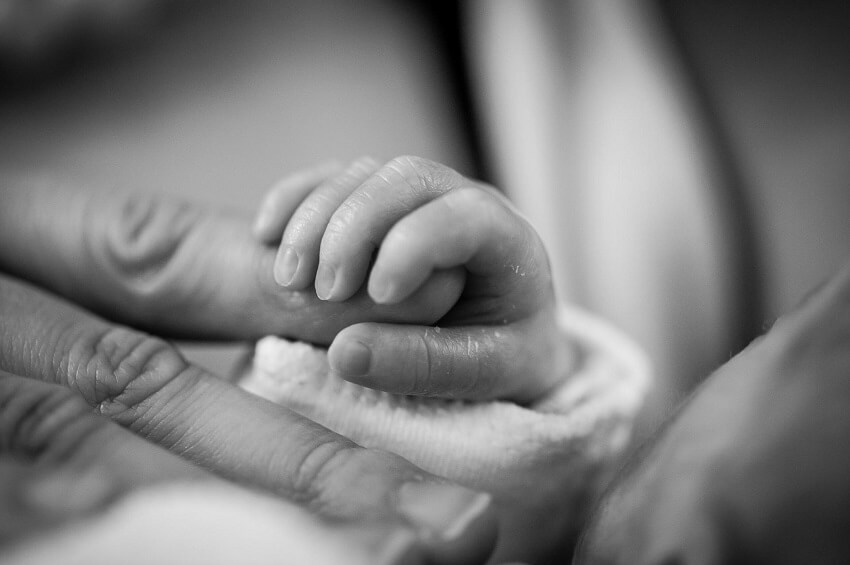

«Εάν ο Κύριος δεν οικοδομήση οίκον, εις μάτην κοπιάζουσιν οι οικοδομούντες αυτόν» (Ψαλ. ρκη’ 1)
Όπως είδαμε στο προηγούμενο αφιέρωμά μας, η έννοια της οικογένειας, όπως είναι γνωστή από την αρχή της ανθρώπινης ιστορίας, επιχειρείται να επαναπροσδιοριστεί στην εποχή μας, θέτοντας ως μοναδικό κριτήριο την «ύπαρξη αγάπης» και καταργώντας κάθε άλλη προϋπόθεση (φύλο, οικογενειακή κατάσταση). Έτσι, οποιοδήποτε είδος ένωσης ανθρώπων διεκδικεί σήμερα το δικαίωμα να χαρακτηρίζεται ως οικογένεια, αφού «η αγάπη κάνει την οικογένεια», σύμφωνα με δημοφιλές σλόγκαν των ημερών μας.
Πολλές φορές τίθεται το ερώτημα αν έχει σημασία μεταξύ δύο ανθρώπων, οι οποίοι θέλουν να δημιουργήσουν οικογένεια, να έχει γίνει γάμος. Εδώ θα πρέπει να τονίσουμε ότι ο γάμος δεν είναι απλώς μια τελετή ή ένα έγγραφο επισημοποίησης μιας σχέσης, αλλά μια δέσμευση με ουσιαστικό ρόλο, καθώς διαμορφώνει ένα περιβάλλον σταθερότητας και ασφάλειας που με κανένα άλλο τρόπο δεν μπορεί να επιτευχθεί. Έρευνες δείχνουν ότι παιδιά που μεγαλώνουν σε περιβάλλοντα γονέων που συζούν ή σχετίζονται με άλλου είδους ένωση, έχουν περισσότερες πιθανότητες να εμφανίσουν αποκλίνουσες συμπεριφορές, μειωμένες επιδόσεις ή και να κακοποιηθούν.
Θα μπορούσε άραγε να υφίσταται οικογένεια με δύο μαμάδες ή δύο μπαμπάδες; Είναι σημαντικό να αναφέρουμε ότι πολλοί κοινωνιολόγοι θεωρούν ότι δεν υπάρχει αυτό που αόριστα αναφέρεται ως «γονεϊκότητα» αλλά υπάρχουν συγκεκριμένα «πατρότητα» και «μητρότητα» επειδή οι τρόποι με τους οποίους αλληλεπιδρούν ένας άνδρας και μία γυναίκα με ένα παιδί, είναι πολύ διαφορετικοί (τρόποι επικοινωνίας, παιχνιδιού, πειθαρχίας κ.ά.). Οι άνδρες δεν μπορούν να δώσουν μητρότητα, ούτε οι γυναίκες πατρότητα. Ένα παιδί χρειάζεται έναν άνδρα-πατέρα και μια γυναίκα-μητέρα από τους οποίους θα προσλαμβάνει διακριτά και συμπληρωματικά οφέλη.
Βλέπουμε λοιπόν ότι όσο κι αν η αγάπη είναι ζωτικό και θεμελιώδες συστατικό για να λειτουργήσει και να προοδεύσει μια οικογένεια, δεν είναι όμως αυτό που την ορίζει και της δίνει υπόσταση. Άλλωστε, γονείς με παιδιά που για κάποιο λόγο παύουν να αγαπιούνται, παύουν να είναι και οικογένεια;
«Η αγάπη [...] δεν ασχημονεί [...] δεν χαίρει εις την αδικίαν, συγχαίρει δε εις την αλήθειαν» (Α’ Κορ. ιγ’ 4-6)
Η έννοια της «αγάπης» που πολλοί επικαλούνται για να ορίσουν την οικογένεια, δυστυχώς στερείται γνησιότητας αν δεν παραδέχεται την αλήθεια που αντικειμενικά φανερώνεται, ενώ η αγάπη απουσιάζει όπου υπάρχει ασχημοσύνη (βλ. προς Ρωμαίους α’ 27).
Αγαπητοί αναγνώστες, ο καιρός είναι έσχατος και δεν εκπλησσόμαστε από τις προσπάθειες διαστροφής της αλήθειας, καθώς αυτό είναι προφητευμένο ότι θα συμβεί πριν τον ερχομό του Κυρίου. Με την αλλοίωση της έννοιας του γάμου και της οικογένειας είναι προφανές ότι ο εχθρός της ψυχής του ανθρώπου θέλει να αποκρύψει και να απαξιώσει το μεγαλειώδες γεγονός που πρόκεται να λάβει χώρα σύντομα στον ουρανό, και το οποίο είναι ο γάμος του Αρνίου (Αποκάλυψις κεφ. ιθ’). Μάλιστα, σύμφωνα με τον απ. Παύλο, ο γάμος μεταξύ δύο ανθρώπων δόθηκε από τον Θεό ως πρόγευση αυτής της αιώνιας ένωσης του Χριστού με την εκκλησία:
«Το μυστήριον τούτο είναι μέγα, εγώ δε λέγω τούτο περί Χριστού και περί της εκκλησίας» (Εφεσ. ε’ 32)
Ας φοβηθούμε λοιπόν τον Θεό, ώστε αφενός να μην επιχειρούμε να αλλοιώσουμε έναν θεσμό που Εκείνος θέσπισε ως προτύπωση ενός ουράνιου μυστηρίου, αφετέρου δε να μετανοήσουμε και να καθαριστούμε από την αμαρτία, καθώς το αίμα του Χριστού ρέει ακόμα και η αγκαλιά Του είναι ακόμη ανοιχτή για την αιώνια σωτηρία:
«Όστις πιστεύση και βαπτισθή θέλει σωθή, όστις όμως απιστήση θέλει κατακριθή» (Μάρκ. ις’ 16)
ομάδα «Χριστιανισμός και Επιστήμη»
www.christianity-science.gr
Δημοσιεύθηκε στη στήλη της ομάδας στην εφημερίδα «Χριστιανισμός», .